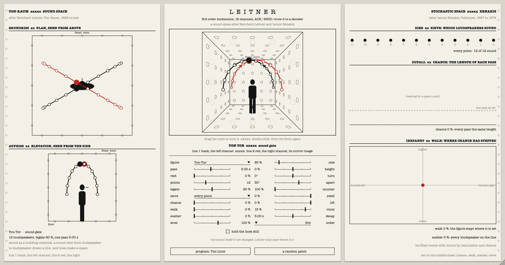
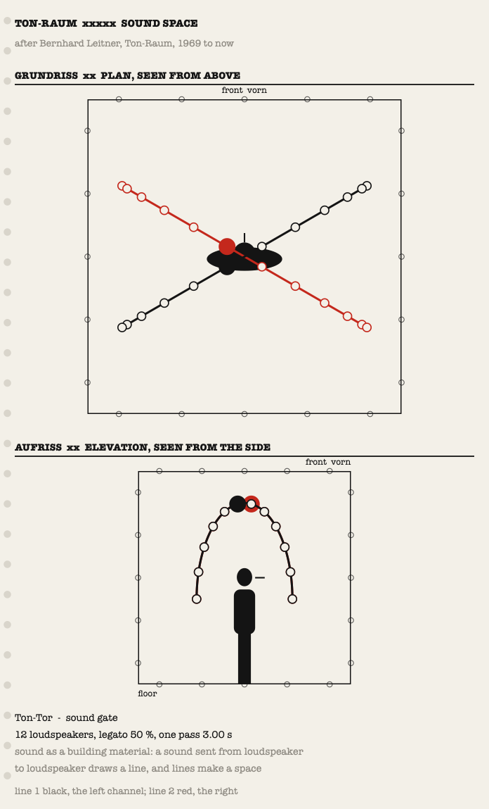
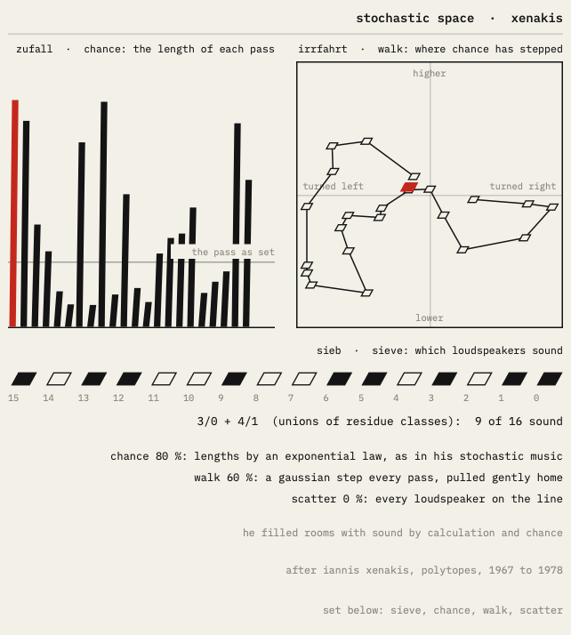
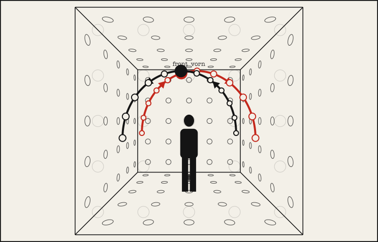
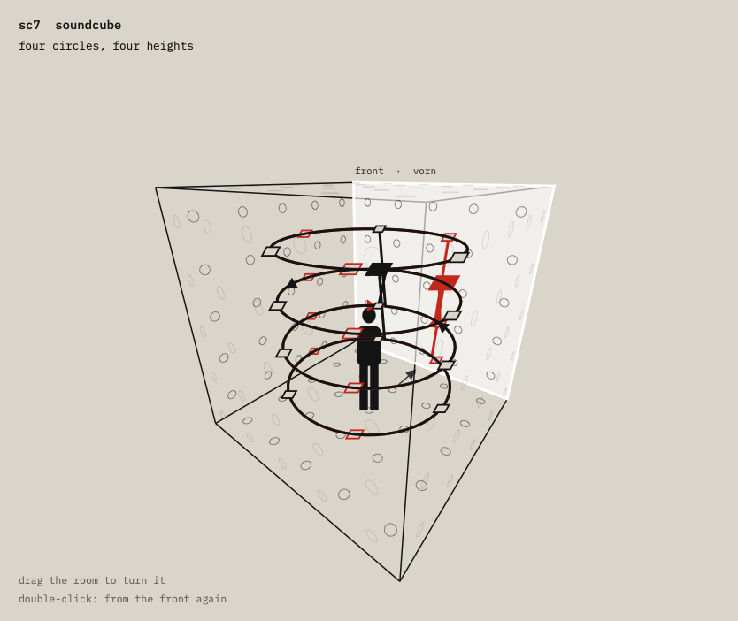
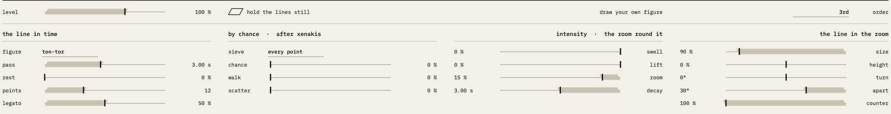
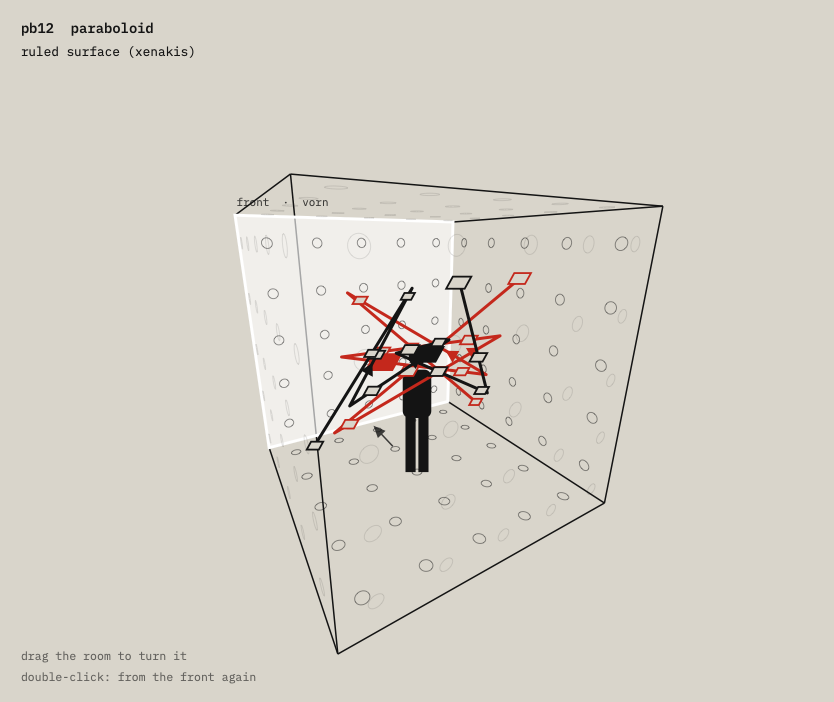
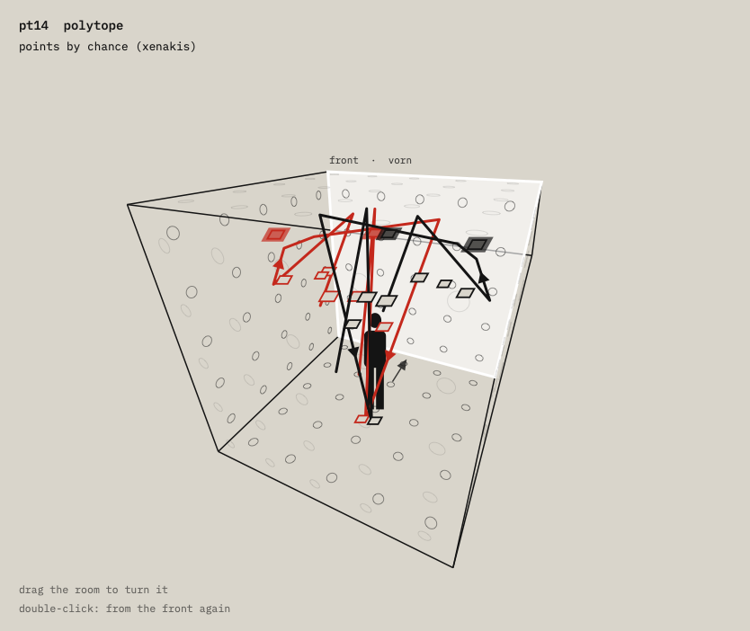
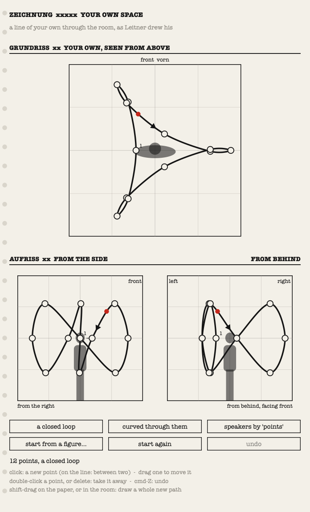
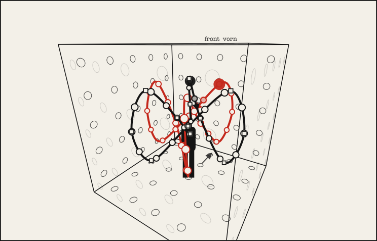

a sound space xxxxx ein Ton-Raum
A spatialization plug-in after Bernhard Leitner and Iannis Xenakis: an Ambisonics encoder, 3rd to 7th order

M A N U A L xxxxx H A N D B U C H
version 0.4
| 1. What Leitner is | 2 |
| 2. Installing it, and routing it to a decoder | 2 |
| 3. The window: three sheets | 4 |
| 4. The room: seeing where things are | 7 |
| 5. The space: lines of sound | 8 |
| 6. The figures | 10 |
| 7. Your own figure: drawing in three dimensions | 11 |
| 8. Chance: what comes from Xenakis | 13 |
| 9. Programs, and your own presets | 14 |
| 10. Starting points | 16 |
| 11. If something seems wrong | 16 |
| 12. Every parameter | 17 |
| 13. Sources and credits | 18 |
Leitner is a spatialization plug-in. It does one thing: it takes the sound you give it and sends it through a room round the listener as two lines of sound, after the Ton-Raum work of Bernhard Leitner, with the chance, random walks, clouds of points and sieves of Iannis Xenakis. The sound itself is not changed: Leitner only says where it is. (Leitner called this the space program, kept apart from the sound program; here the sound program is whatever you put on the track before it.)
It is an encoder. Stereo (or mono) goes in; Ambisonics come out, in ACN channel order with SN3D normalisation (the AmbiX format that the IEM and SPARTA plug-ins use). It decodes nothing itself: you route it to a decoder for your loudspeakers or headphones.
Channels out: 16 at 3rd order (the default), 25 at 4th, 36 at 5th, 49 at 6th and 64 at 7th.
macOS: copy Leitner.vst3 to ~/Library/Audio/Plug-Ins/VST3 and Leitner.component (Audio Unit) to ~/Library/Audio/Plug-Ins/Components. Windows: copy Leitner.vst3 to C:\Program Files\Common Files\VST3. Linux: copy Leitner.vst3 to ~/.vst3 and Leitner.lv2 to ~/.lv2. Then rescan plug-ins in your DAW; it appears under FreakiePie. (Building it yourself on macOS or Windows puts the plug-ins in place for you.)
The window from the front, with the Ton-Tor: line 1 rising on the left as line 2 falls on the right.
The window is three typed sheets, mirror symmetrical in their layout. In the middle is the room, with every control of the space under it in two facing columns. On the left is a sheet after Leitner: the figure drawn as an architect would, in plan and elevation. On the right, its mirror, a sheet after Xenakis: what chance is doing. Both side sheets only show; everything is set on the middle sheet.
It is drawn after Bernhard Leitner's Soundcube sheets of 1969: typed sheets, the room in perspective with its loudspeakers as small circles, the sound as a heavy black line with arrows, a solid black figure standing in it, and typed captions in English and German.

The Leitner sheet: the Ton-Tor in plan (from above) and elevation (from the side).

The Xenakis sheet after a while with chance 80 %, walk 60 % and the sieve 3/0 + 4/1.
| Grundriss, plan | the room seen from above, the front at the top, you in the middle as head and shoulders. Line 1 black, line 2 red, the loudspeakers each is built from as open circles, and where each is sounding now as filled ones. The small circles round the edge are the walls' loudspeakers. |
| Aufriss, elevation | the same seen from the left side: the front is to the right, the floor at the bottom, you standing. Here you see height: Ton-Tor and Vertikal rise and fall, Ton-Liege lies low along the body. |
| the caption | the figure's name, how many loudspeakers it has, the legato and the length of a pass. |
| Sieb, sieve | one circle per loudspeaker of the raster, numbered from the right: filled where the sieve lets it sound, open where it doesn't. |
| Zufall, chance | the length of each of the last 24 passes, as bars (the newest red, on the left). The dashed line is the pass as you set it. With chance at 0 every bar stands on it; turned up, they scatter by the exponential law. |
| Irrfahrt, walk | where the random walk has taken the figure: across, how far it has turned; up, how far it has risen. The trail joins the last passes, the red dot is where it is now. |
| the captions | what walk and scatter are set to, in words. |
| click or drag along a line | sets the value. The tick is where it is; the number beside the line is its value. |
| double-click a line | puts it back to where it started. |
| a name with a line under it and a triangle | is a list: click it to choose. |
| a square | is a switch: click it. |
hold the lines still stops both lines where they are. program opens the programs and your own presets (chapter 8), and a random patch makes a new space: a figure, a raster, and some of Xenakis's chance. It leaves the order, the level and hold as they are.

From the front, as you sit in it: you are the black figure, looking at the far wall.

Turned and seen from above: the Soundcube figure, four circles at four heights.
Drag the room to turn it, left and right to walk round it and up and down to look from above or below. Double-click it to see it from the front again. Turning the drawing changes nothing you hear: it is only a way to look.
| the box | the room. It is the cube round the Ambisonic sphere: its walls are as far as a sound can go. |
| the black figure | you, standing in the middle with your ears at the centre of the room. |
| the arrow on the floor, "front vorn" | which way you face. It stays true as you turn the room. |
| small faint circles on the walls | loudspeakers, as on Leitner's sheets. They are scenery: your real loudspeakers are whatever your decoder is set for. |
| the heavy black line | line 1, the path the left channel travels. |
| the heavy red line | line 2, the path the right channel travels: always the mirror image of line 1, left for right. |
| open circles on a line | the loudspeakers that line is built from (the raster: see points). |
| filled circles | where the line is sounding from at this moment. Between two loudspeakers both are filled, each as strongly as it is playing; louder sound makes them larger. |
A wall that stands between you and the inside of the room is drawn very faint, so that you can always see in.
"I defined a line as a sequence of points and saw each point as a source of sound," Leitner wrote of his beginning in 1968. A sound moved along a row of loudspeakers draws a line; lines moving in time make a space. Here the left channel is one line and the right channel is the other.

| figure | which space the lines draw. The fourteen figures are on the next page; the fifteenth is your own drawing (chapter 7). |
| pass | how long one pass of the figure takes, from 50 ms to a minute. There are no bars or beats anywhere in Leitner: time is in seconds, and chance can make every pass a different length. |
| rest | how much of each pass the line spends waiting at its end before it sets off again. |
| points | how many loudspeakers the figure is built from, 2 to 32. Leitner's sound did not glide: it was switched from one loudspeaker to the next. All the way up it reads continuous and the line moves smoothly instead. |
| legato | how far each loudspeaker overlaps the next. At 0 the sound jumps; at 100 % it melts from point to point. |
| sieve, chance, walk, scatter | see chapter 7. |
| level | the output level of the whole scene. |
| size | how big the figure is. At 100 % it reaches the walls. |
| height | how high it sits. 0 is the height of your ears. |
| turn | swings the whole figure, both lines together, round you. |
| apart | how far line 1 stands to the left of the figure's direction, and line 2, its mirror image, to the right. At 0 the two lines lie on top of each other. |
| counter | how far line 2 runs behind line 1. At 100 % it is exactly opposite: one rises as the other falls. |
| swell | makes a line louder where it comes nearest your body. (Leitner: an approaching sound is given a crescendo.) |
| lift | thins a line as it rises and fills it as it falls. (His "lifting" and "dropping".) |
| room, decay | one reverb for the whole sphere, and how long it rings. |
| order | the Ambisonic order, 3rd to 7th. |
A line can pass straight through the middle of the room. Near the centre the higher orders fade, so the sound spreads all round you, is inside your head for a moment, and leaves on the other side.
| Figure | What the lines do | After |
|---|---|---|
| Ton-Linie | a straight line across the room, there and back. With height at 0 it goes through your head. | Leitner's line of sound; the leading path of the Ton-Röhre |
| Schwingen | a pendulum across you, slowest at the ends. | the swinging space of the Ton-Röhre, 1973 |
| Ton-Liege | to and fro along the body, low. | the Ton-Liege sound chair, 1975 |
| Ton-Tor | up one side, over your head and down the other. | Ton-Tor, 1971: one line rising as one falls (set counter to 100 %) |
| Vertikal | floor to ceiling and back. | the vertical lines of the Wand-Raster, 1972 |
| Kreis | a ring round you at one height. The two lines circle in opposite directions. | circling, in the Ton-Röhre and Le Cylindre Sonore |
| Soundcube | four circles, one after another, at four heights. | a sheet of the Soundcube project, 1969 |
| Spirale | winding up round the body and down again. | Spiral-Räume, 1976 |
| Ton-Würfel | corner to corner of a cube, along its edges. | Ton-Würfel, 1980/81, which had eight loudspeakers. The corner tour is this plug-in's own. |
| Erweitern-Verengen | out from the centre and back in. Set apart to 90° and the space widens and narrows. | Erweitern/Verengen, 1977 |
| Wölbung | a vault overhead, drawn rib by rib. | his vaults; Doppel-Wölbung, 1999. The six ribs are this plug-in's own. |
| Paraboloid | straight lines zigzagging between two edges that cross in the air: straight lines sweeping a curved surface. | Xenakis: the glissandi of Metastaseis, which became the ruled surfaces of the Philips Pavilion |
| Terretektorh | a flat spiral from the wall in towards you, faster and faster, and out again. | Xenakis: the accelerating rotations of sound through the orchestra in Terretektorh |
| Polytope | eight points thrown over the sphere and joined in turn; new points every pass. | Xenakis: the points of light and sound of the Polytopes |
| Eigene Zeichnung | your own path through the room, drawn in three dimensions (chapter 7). | you, as Leitner drew his spaces on paper before they were built |

Paraboloid, turned to see it from the side.

Polytope with some scatter: points by chance.
Leitner drew his spaces before he built them: a room in plan and elevation, the loudspeakers as small circles, the sound as a heavy line with arrows. The last figure, Eigene Zeichnung, lets you do the same: draw a path through the room in three dimensions, and the lines of sound follow it. Choose it from figure, or press draw your own figure under the controls (the same button then reads back to the figure you came from).
The Leitner sheet on the left becomes the drawing sheet. It shows your path three times: from above (the front at the top), from the side (from your right, the front to the right) and from behind (facing the front, as the room is first seen: your left on the left). Each view moves two of the three measures of a point, so between them you can put a point anywhere in the room. The small red dot is where line 1 is now.

The drawing sheet: a twelve-point knot from above, from the side and from behind. The filled point is the one picked; the dashed guides run through it.

The same path in the room, turned. Your points are the small squares on line 1: drag them here too. Line 2, in red, is its mirror image.
| click | a new point. Click on the line and it goes between the two points either side; anywhere else it goes after the picked point (or at the end), at the picked point's third measure. |
| drag a point | move it, in that view's two measures. The caption under the views gives the picked point's place: front, left and up, in percent of the room. |
| double-click a point | take it away (or pick it and press delete). A path keeps at least two points. |
| shift-drag | draw a whole new path freehand. It is thinned to the corners that matter (at most 64 points); if its ends meet it becomes a closed loop. Drawn from above it lies at ear height, from the side or behind it runs through the middle; lift and move its points in the other views. |
| cmd-Z | undo (or the undo button), fifty steps back. |
While the figure is your own, your points show in the room as small squares on line 1. Drag one to move it across your view of the room, at its own depth: turn the room to reach the depth you want. Shift-drag on the room draws a new path on the plane through the middle of the room that faces you, so turning the room first and then drawing gives you paths at any angle. Dragging anywhere else still turns the room; double-clicking a square takes that point away.
| a closed loop / open: there and back | a loop runs round and starts again; an open line goes to its end and comes back, as Ton-Linie does. |
| curved through them / straight lines | a smooth curve through your points, or straight lines from point to point (Leitner's sheets mostly have straight ones). |
| speakers by 'points' / speakers at my points | where the raster's loudspeakers stand: spread evenly along the path by points, or one at each of your points, so the sound jumps from point to point exactly as you placed them (with legato at 0). The sieve still picks among them. |
| start from a figure... | replaces the drawing with one of the fourteen figures, as points you can then move: a quick way to bend a Soundcube or open up a Ton-Würfel. |
| start again | a plain line from back to front, to draw from. |
Everything else works on your drawing as on any figure: size scales it, height raises it, turn swings it round, apart and the mirror image make line 2, and the raster, chance, walk, scatter and sieve all apply. The line moves along your path at an even speed, however unevenly you placed the points. The drawing is kept with your session and in your presets; the programs leave it alone.
Iannis Xenakis composed masses of sound by calculation and probability, and placed them in space: across loudspeakers in the Philips Pavilion and the Polytopes, and among the audience in Terretektorh. Four controls and three figures here come from his ideas. They are what takes Leitner away from regular, bar-like repetition.
| chance | Stochastic time. At 0 every pass takes the same time. Turned up, the length of each pass is drawn from an exponential law, the law of the gaps between chance events that Xenakis used for durations. At 100 % a pass may be a sixth of the pass time or four times it, and you cannot predict which. |
| walk | A random walk. At every pass the figure takes a Gaussian step in direction and in height, and glides there. A gentle pull brings it home again, so it wanders but is never lost. (His Brownian-motion pieces draw their lines this way.) |
| scatter | Clouds of points. Each loudspeaker of the raster is thrown off the line by a Gaussian deviation, new at every pass. A little scatter roughens the line; a lot turns it into a cloud of points round where the line would have been. It acts on the raster, so it does nothing when points reads continuous. |
| sieve | Sieves. A sieve lets through only some of the raster's loudspeakers: those whose number falls in a union of residue classes. "3/0 + 4/1" means every third point starting at 0, together with every fourth starting at 1: of sixteen points that is 0, 1, 3, 5, 6, 9, 12, 13, 15. The line then steps unevenly, with long and short jumps. |
| Name | Lets through |
|---|---|
| every point | all of them |
| 2/0 | every second point |
| 3/0 + 4/1 | every third, and every fourth from 1 |
| 5/0 + 7/3 | every fifth, and every seventh from 3: sparse |
| 3/1 + 5/2 + 7/0 | three classes together: dense and uneven |
The program button at the bottom of the middle sheet opens the list: eighteen spaces, eleven after Leitner and seven after Xenakis, and then yours. Choosing a program sets every control of the space except the Ambisonic order, which belongs to your track and stays as you have it.
| Program | The space |
|---|---|
| after Leitner | |
| Ton-Linie | a line across the room in eight steps |
| Through the Body | one line through your head, swelling as it nears |
| Ton-Tor | the gate, one line rising as one falls, thinning at the top |
| Schwingen | a smooth pendulum across you |
| Ton-Liege | four points along the body, slow and melting |
| Soundcube 1969 | four circles at four heights, 32 points |
| Vertical Space | floor to ceiling in hard steps, the lines opposed |
| Spiral Space | winding up round the body and down, thinning as it rises |
| Ton-Würfel | the cube's eight corners, hard steps, the lines a quarter apart |
| Widening, Narrowing | out from the centre to left and right, and back |
| Vault | a slow vault overhead in a long room |
| after Xenakis | |
| Ruled Surface | the paraboloid, two families of straight lines |
| Terretektorh | the accelerating spiral, the lines a quarter apart |
| Polytope | points by chance, scattered, with rests |
| Persephassa | six points round you, the sound circling (the six percussionists round the audience of Persephassa, 1969) |
| Nomos Gamma | a scattered cloud that wanders (the orchestra spread among the listeners of Nomos Gamma, 1968) |
| Sieve Ring | a ring through the sieve 3/0 + 4/1, by chance |
| Brownian Line | one line on a random walk |
save this as a preset... keeps the space as it is now in a file with the name you give it. Your presets then appear in the list under yours. show the presets folder opens the folder: they are ordinary files ending in .leitner, so you can copy them to another computer, rename them or delete them there.
| macOS | ~/Library/Application Support/FreakiePie/Leitner/Presets |
| Windows | %APPDATA%\FreakiePie\Leitner\Presets |
| Linux | ~/.config/FreakiePie/Leitner/Presets |
A preset remembers the Ambisonic order it was saved with. Everything is also saved with your DAW session as usual, whether or not you make a preset of it. Sessions and presets from Leitner 0.2 open with their space; the effects they had are no longer part of Leitner.
| For | Set |
|---|---|
| hearing the lines plainly | room 0, Ton-Linie, 8 points, legato 0. Play something steady: you will hear it switched from loudspeaker to loudspeaker. |
| a slow enveloping space | Wölbung, continuous, pass 20 s, room 40 %, decay 8 s. |
| a sound through the body | Ton-Linie, height 0, apart 0, swell 80 %, pass 3 s. |
| rising and falling | Ton-Tor or Vertikal, counter 100 %, lift 70 %. |
| an unpredictable field | Polytope, chance 100 %, scatter 40 %, rest 20 %. |
| a limping ring | Kreis, 16 points, legato 0, sieve 3/0 + 4/1, chance 60 %. |
| I only hear plain stereo | The track has two channels. Give it 16 or more and put a decoder after Leitner. The line under the title says what is coming out. |
| It sounds phasey or hollow | The decoder is not set to the same order, or expects a different normalisation. Use SN3D (AmbiX) and match the order. |
| I asked for 7th order and get 3rd | The track has fewer than 64 channels, or you are using the Audio Unit (3rd order only). Use the VST3 on a 64-channel track. |
| The two lines sound like one | apart is at 0, or the input is mono. Mono input puts the same sound on both lines; turn counter up to separate them in time. |
| Clicks as the line moves | legato at 0 switches hard on purpose. Turn it up. |
| Scatter does nothing | points is at continuous. Scatter moves the raster's loudspeakers, so it needs a raster. |
| The room drawing is at an odd angle | Double-click it. |
| The level dips on loud passages | Leitner has a ceiling on its output: if the scene would pass full scale, every channel is turned down together for a moment. Lower level, or the level going in. |
| Where are the effects? | Leitner 0.3 is a spatializer only: the effects it carried from Cloudfin (and the pulses) are gone. Put any effect on the track before Leitner, or use Cloudfin itself. |
| The type looks different on Windows or Linux | The window is set in American Typewriter on macOS. Elsewhere it uses Courier New (Windows) or the system's monospaced face (Linux); everything else is the same. |
| High CPU | 7th order with the room on is the heaviest setting. Lower the order, or turn room to 0. |
| Name | Range | Default |
|---|---|---|
| order | 3rd, 4th, 5th, 6th, 7th | 3rd |
| figure | the fourteen figures, and your own drawing | Ton-Linie |
| pass | 50 ms to 60 s | 4 s |
| rest | 0 to 90 % | 0 % |
| size | 10 to 100 % | 90 % |
| height | -100 to +100 % | 0 % |
| turn | -180° to 180° | 0° |
| apart | 0° to 90° | 30° |
| counter | 0 to 100 % | 0 % |
| points | 2 to 32, continuous | 8 |
| legato | 0 to 100 % | 50 % |
| swell, lift | 0 to 100 % | 0 % |
| chance, walk, scatter | 0 to 100 % | 0 % |
| sieve | five sieves | every point |
| room | 0 to 100 % | 15 % |
| decay | 0.3 to 20 s | 3 s |
| level | 0 to 150 % | 100 % |
| hold | off, on | off |
All of these can be automated from your DAW.
Leitner is an homage. It is not affiliated with or endorsed by Bernhard Leitner or the estate of Iannis Xenakis, and it contains no drawing, recording, score or text of theirs.
From these: the line of sound as a sequence of points, sound switched from loudspeaker to loudspeaker, the figures in chapter 6, the crescendo of an approaching sound and the decrescendo of a rising one, the separation of space program and sound program (Leitner is only the space program), and the look of the sheets, including the plan and elevation. The Soundcube project had 64 loudspeakers on each of its six walls; the drawing here shows 25 a wall, for legibility.
These were written from general knowledge of his work, not checked against the scores: the three Xenakis figures are interpretations, not reconstructions.
The conventions (ACN, SN3D, x ahead, y to the left, z up) follow the IEM Plug-in Suite and SPARTA. The room is built like the IEM FdnReverb. The Ambisonics code is shared with Pinkie Pie's Balloon Palace. No code from IEM or SPARTA is included.
GNU Affero General Public License v3. Built with JUCE. Leitner began inside Cloudfin's repository; since 0.3 it is its own plug-in, at github.com/femifleming/Leitner.